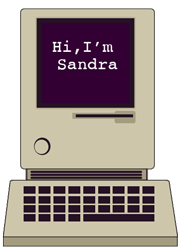

I discovered my passion for designing innovative
ventures at a young age, exploring programming
on a Tandy TRS-80 and sketching people and
flowers on various mediums.

I've sharpened my skills through a Bachelor of
Science degree in Graphic Design from Full
Sail University and a Computer Network Technology
Diploma from United Education Institute.
I've also expanded my skills in UX and Product
Design, delving into the insights of Machine
Learning, Natural Language Processing, IT Automation,
Social Media Marketing, Project Management, Data Analytics,
Conversational Design, and Google Cloud.
When I'm not designing, I enjoy exploring new
cuisines and cultures, which helps me bring
fresh perspectives to my projects.
I'm also an avid reader and Marvel
Cinematic Universe enthusiast. I'm excited to
continue exploring the intersection of technology
and creativity, and to create meaningful moments
that enhance the human experience. Resume